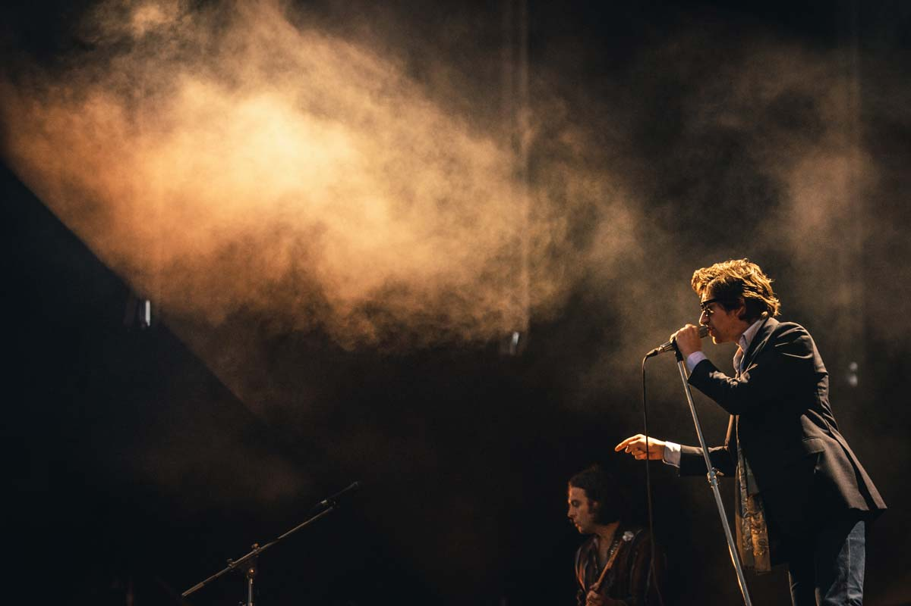
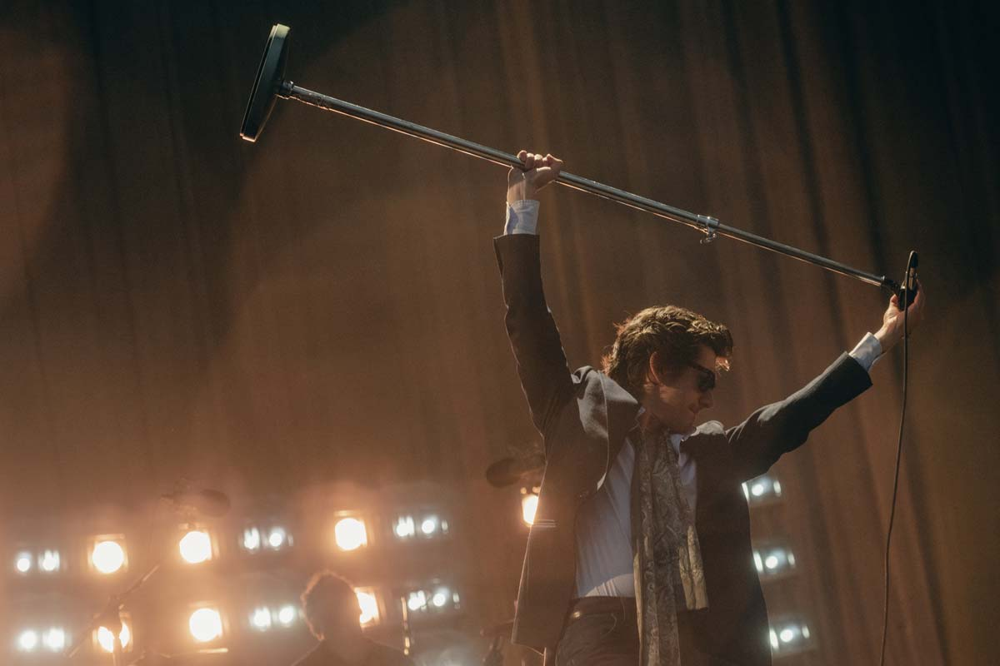
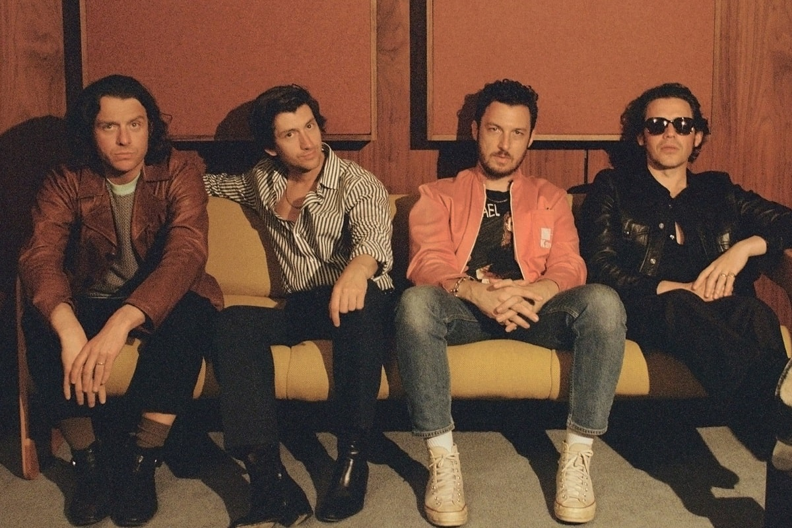

Un disco inspirado en nirvana
Decenas de discos se han grabado en los estudios Sound City desde la apertura en 1969. Bandas y artistas como Elton John, Fleetwood Mac, Neil Young y Santana, entre tantos otros, pasaron por allí para poder materializar sus creaciones. Uno de los álbumes más recordados que se grabaron en el estudio ubicado en Los Ángeles fue Nevermind, el segundo LP de Nirvana que, producido por Butch Vig, catapultó al trío a la fama mundial. El impacto que Nevermind tuvo en los conjuntos que le siguieron al de Kurt Cobain, Krist Novoselic y Dave Grohl fue tal que llevó a varios de ellos a la soleada California para seguir sus pasos. De hecho, eso es lo que ocurrió con Arctic Monkeys cuando se dispuso a grabar su cuarto disco, Suck It and See. Nirvana en la sesión de fotos de Nevermind en 1991 - Foto: Kirk Weddle Un disco inspirado en el vivo Según recuerda Far Out Magazine, el propio Alex Turner afirmó que el grupo británico intentó deliberadamente replicar el elemento en vivo de Nevermind. Además, el oriundo de Sheffield explicó: "Queríamos intentar grabar bastante en vivo, y la sala de batería de ahí es en la que tocaron Nevermind, así que fue una gran atracción". En una entrevista con NME el cantautor inglés recordó: “Está este ingeniero que todavía está ahí [desde los días de Nevermind], un tipo serio, a quien respetamos. Teníamos que intentarlo de verdad y no perder el tiempo con ninguna versión de Nirvana. 'Polly' o 'Drain You'”. Turner reconoció que si su banda decidiera hacer un cover de Nirvana, sería una de In Utero. “Si alguna vez tuviéramos que hacer una canción de Nirvana, no sería una de Nevermind, sino ‘Very Ape’ de In Utero. Esa sería la mejor opción de ellos para que versionemos”, sentenció.
Primavera Sound Buenos Aires: Los platos fuertes de un festival pasado por agua
El lounge semi-espacial de “Sculptures Of Anything Goes” mejoró la existencia de las miles de personas que, empapadas, pedían una sobredosis de locura. Del dicho al hecho, “Brianstorm” generó un torbellino humano en el que mucha gente cayó desmayada por el asfixiante efecto embudo que llevó a que el vallado tuviese que ceder mucho más de lo recomendable. Muy preocupado, Alex Turner mostró muchísima “viveza”: decidió frenar el show y, tras reunirse con sus compañeros y la producción, pidió que todos diesen varios pasos atrás y más cuidado. No hubo manera de evitar el descalabro con el cierre de uno de sus éxitos más revulsivos, pero el hecho de que hayan sumado la tranquila y voladora “Cornerstone” de inmediato a la lista fue un mensaje claro.  Claro que esto no fue comprendido por muchos de los que se agolpaban bien cerca del escenario: “Snap Out Of It” la cruza perfecta entre las dos etapas más marcadas de los británicos, fue cortada también a la mitad y volvieron las reuniones y los pedidos de calma. Volvieron al ruedo, pero alternando entre el la sensualidad más oscura (“Why’d You Only Call Me When You’re High”) y una versión más acelerada y jazzera de “Four Out Of Five” que los encontró disfrutando de un proceso de persistente evolución en el que nunca hay absolutos.
El despegue hacia lo desconocido volvió a corporizarse en una versión un poco más directa de “Arabella” que fue dominada por los juegos rítmicos de un Matt Helders impecable y que tuvo como cierre el riff de “War Pigs” de Black Sabbath. Enlace con el metal originario que tuvo mucho sentido durante “Potion Approaching” por su estética grandilocuente y ruidosa, con batería y guitarra explotando en las cercanías de la marea humana. Turner pasó con mucha elegancia y solvencia por todas las versiones del frontman, pero dos destacaron con creces: la del regulador de emociones (“There’d Better Be A Mirrorball”) y la del seductor empedernido (“Do I Wanna Know?”). Para “Tranquility Base Hotel & Casino”, el británico desgarró la voz al máximo posible y le dio mucha más crudeza y locura a una canción hecha para el lobby de un hotel intergaláctico. Del pequeño desmadre (“Pretty Visitors”) al gran desmadre (“I Bet You Look Good On The Dancefloor”) hubo pocos grados de separación y muchísima nostalgia. La despedida fue con “Body Paint”, un híbrido entre lounge, hard rock y retrofuturismo que es la joya del nuevo disco, y con una (nueva) versión muy poderosa de “505”. Dos momentos muy guitarreros con los que, entre sonrisas, dejaron en claro que, aún con toda su notable y lógica evolución a cuestas, siguen siendo todo eso que el mundo está empecinado en decir que no son.
Arctic Monkeys sobre su nuevo disco: "Nos llevó mucho más tiempo llegar al punto final"
Alex Turner y Matt Helders de Arctic Monkeys fueron recientemente entrevistados en lo que es la previa del lanzamiento de The Car, su séptimo álbum, que verá la luz el 21 de octubre. De cara a su presentación en Studio Brussel, la entrevistadora de 3FM consultó a los miembros por este trabajo. “¿Recuerdan el momento del click, de sentir que [el disco] estaba completo y terminado?”, preguntó Vera Siemons (vía NME), a lo que los ingleses respondieron: “Nos tomó mucho más tiempo llegar al punto final de este que de cualquiera de los otros. Supongo que porque teníamos un poco más de tiempo". Y agregaron: "Probablemente también estaba más disperso". Turner dio su opinión al respecto del proceso, alegando que posiblemente dilatarlo en el tiempo implicaría darle lugar a cada vez más ajustes para hacer. Al respecto del título del disco y con una fina dosis de humor, se permitió agregar: “Sorprendentemente, no sé si alguna vez lo escuché en un auto".  Uno de los puntos donde quiso poner el foco la entrevistadora fue en el tema “Mr. Schwartz”, título que la llevó a preguntarles si algo tenía que ver con el poeta estadounidense Delmore Schwartz. Los músicos respondieron que no, que no era más que una coincidencia. Igualmente, reconocieron que tenía que ver con una canción a la cual llamaron “Del Schwartz” (por un modelo de auto) que finalmente no entró en el disco. Arctic Monkeys estará visitando la Argentina en el marco del próximo Primavera Sound, mientras que ayer anunciaron nuevas fechas de su gira europea, que durará hasta mayo.